《丈量》项目书
项目介绍
与上海天文馆合作创作的最终版剧本《星海战纪》省级文化基金在申。
2.故事梗概
《丈量》vr电影项目
在广袤的空间和无限的时间中能够与你共享同一颗星球和同一段时光是我的荣幸
1.故事背景：故事发生在2075年，主角是一名小学生，母亲是一位天文学家，在一次野外勘中不幸去世。母亲留给主角一本日记，成为主角理解母亲事业与情感的桥梁。
2.主线情节：主角通过阅读母亲日记，进入一个位于中国空间站的虚拟世界。空间中有一个控制台，配有长度、质量、时间三个摇杆，代表三大基本物理量。母亲的全息影像引导主角开启探索之旅。
第一段体验：丈量世界的长度
主角推动“长度”摇杆，进入一个巨大的操场，学习长度单位（从毫米到光年）和天文测量方法。通过互动游戏，使用“赫歇尔大炮”望远镜观测天王星，体验宇宙尺度的距离。
母亲在日记中留下关于宇宙广度与情感距离的寄语，鼓励主角继续探索。
3.支线选择：质量 / 时间
【支线一】丈量世界的质量（适合＜15岁）
主角进入“元素小人国”，遇见门捷列夫和元素角色，学习元素周期表。通过歌舞和互动游戏，帮助元素“回家”。随后进入“大人国”，变身巨人俯瞰太阳系，了解八大行星，参与“假如剧场”思考行星系统的平衡。母亲再次出现，强调人类渺小但探索精神永恒。
【支线二】丈量世界的时间（适合＞15岁）
主角来到古代中国的水运仪象台，了解时间测量历史。随后穿越至爱因斯坦的时空理论场景，参与“火车思想实验”，理解狭义相对论。最终置身宇宙，母亲讲述时间与生命的短暂与永恒，表达对重逢的期望。
主题与情感核心
《丈量》VR项目以科学启蒙为表，通过极具想象力的互动叙事，生动普及了物理、天文、化学与时间等基本概念；以情感治愈为里，借助母亲的日记与影像，温柔传递了母爱、思念与鼓励，引导孩子学会面对失去并勇敢成长；最终指向深层的哲学思考，在浩瀚宇宙与渺小个体的对比中，探讨了人类的存在位置、生命的短暂与永恒，以及跨越维度的距离与重逢的可能性，完成了一次知识与心灵共鸣的探索之旅。
5.结局
两个支线均以母亲化作星辰结束，象征着她虽已离去，但精神与爱始终陪伴，激励主角继续探索世界、丈量未知。
3.故事纲要
故事发生在2075年，你是一名小学生，你的母亲是一名天文学家，你的母亲在一次野外勘测中不幸去世，随身携带的遗物中有留给你的一本日记。
母亲去世后，你靠读母亲的日记去了解母亲的事业，在日记中你了解到：在物理学和日常生活中，长度、质量、时间被称为三大基本物理量，它们是描述物质世界最核心、最基础的维度。【1】母亲在日记的第一页留下一句话：小小，妈妈希望你能够知道这个世界的另一个视角，以不同的单位去看待这个世界是完全不一样的，或许，我可能回不去了，但希望这本日记会给你新的启迪，或许，茫茫宇宙我们会再见面。
翻开日记，你进入了一个漂浮于宇宙中的空间站上（中国空间站），在这个空间站中有一个巨大的调控台，大屏幕下方是三个摇杆——分别代表着：长度，质量，时间。进入飞船后，大屏幕上出现妈妈的脸，妈妈介绍现在你所处的位置是中国空间站，窗外正在工作的事月兔号月球车，【此处科普：中华问天展区】妈妈告诉你通过控制面前的摇杆可以带你进入不一样的世界。
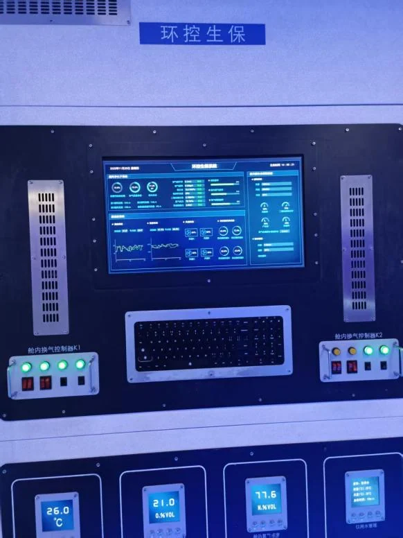
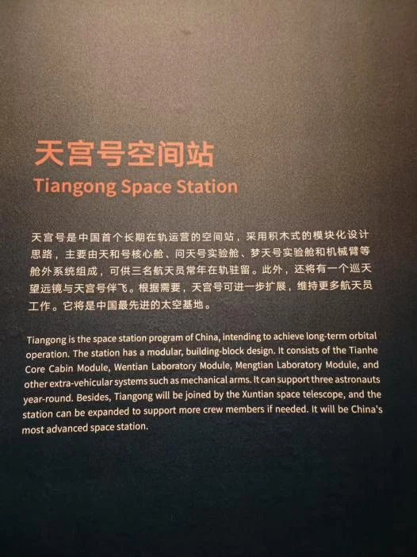
在妈妈的指引下，你开启第一次体验：丈量——世界的长度。你推动摇杆，进入长度的世界，在飞船飞行的过程中，你需要掌握一些测量的基本知识：古人是怎么测量天体间的距离的。
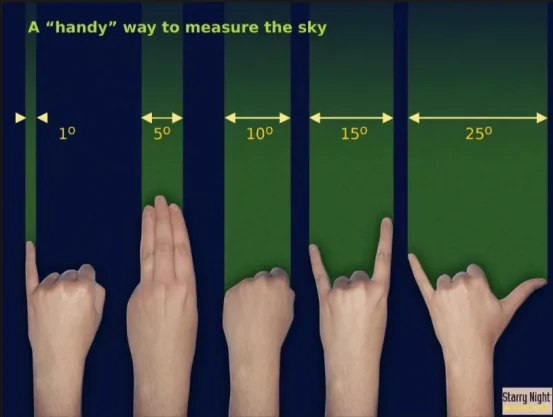
天文角度测量手势
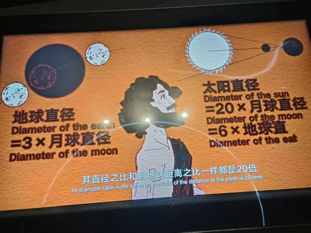
了解好基本知识后，母亲在视频中为你加油，你勇敢的走出飞船，你来到了一个巨大的操场上。你走出飞船来到一个一眼望不到头的大操场上，你遇到了计时员伯伯，由他为你记录。
通过计时伯伯的介绍，了解到现有的单位体系：
常用单位：常用的长度单位有：千米(km)、分米(dm)、厘米(cm)、毫米(mm)、微米(μm)、纳米(nm)、皮米(pm)、飞米(fm)；
天文单位：光年、秒差距、天文单位【重点介绍】
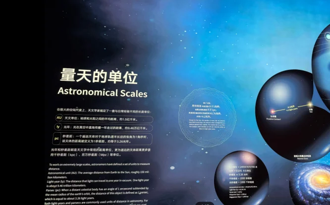
一毫米：你轻轻晃动身子就到达乐；一米：你跨一步即到；一千米=米，你以匀速跑步【游戏：摆动身体】，花费四分钟跑完；一光年；你看着遥远望不到头的距离，不知道该怎么到达，你打开母亲的日记，其中一页记载了赫歇尔“大炮”天文望远镜：【此处可替换：赫歇尔大炮、威尔逊之巅、伽利略的望远镜】
英国科学家威廉·赫歇尔出生于1738年，是天王星的发现者。他先后制造了四百多台望远镜，代表作就是这台被称为赫歇尔“大炮”的大型反射望远镜。它是当年世界上最大的望远镜，其后五十年间无人超越。
你通过赫歇尔大炮观测到了约2.88光年外的天王星。【此处可引申介绍科普知识：量天尺的概念（如何测量宇宙天体间的距离）】
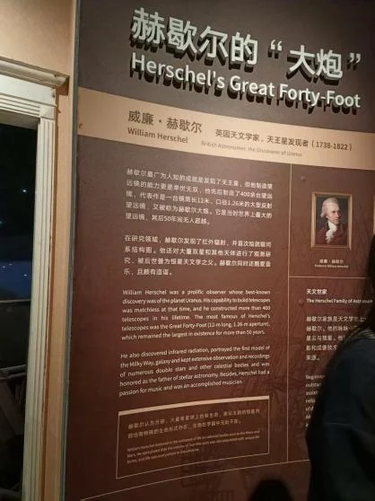
【此处加一个互动游戏】你要通过赫尔斯大炮定位到（）星星，运用刚才妈妈教的测量角度指示确定星星的角度与距离。
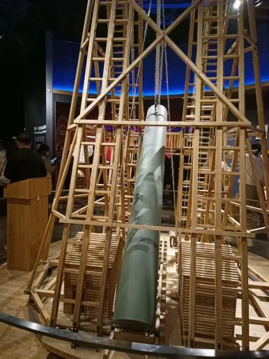
通过跨越不同长度单位的距离，你看到了这个世界的长度，翻开妈妈的日记。妈妈在长度这一页留言：人类已知宇宙最远距离指可观测宇宙的半径，约为465亿光年，对应直径约930亿光年。可，真正最远的距离，是你与我此刻的距离，仿佛远在天边，不知去处，也恍若近在眼前，从未离开，加油吧孩子，去奔跑，去寻找，去发现，这个世界比你想象的更多姿多彩。
你回到了飞船中，这次在你的面前有两个选项。第一个选项：丈量——世界的质量；【建议小于15岁】第二个选项:丈量——世界的时间。【建议大于15岁】
【支线一：丈量——世界的质量】
你推动滑竿，进入一个元素的小人王国，在你的面前是一副巨大的元素周期表，像一个巨大的格子间。
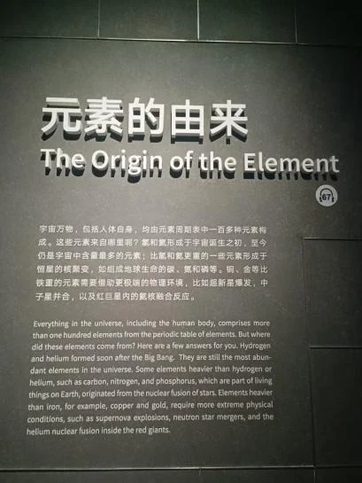
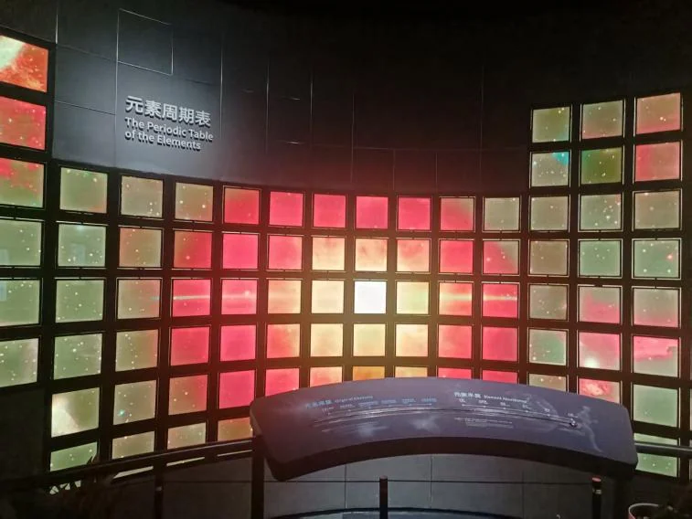
门捷列夫正在让元素们排好队自己选择房子住进去，你不知道自己要住进哪一个房子，门捷列夫向你介绍：物质在宏观层面的基本构成方式是由元素组成，元素周期表的排列规律是什么。
这个时候正在排队进房子的元素在门捷列夫的介绍下向你打招呼：【元素的歌舞表演】
我是氢，我最轻，火箭靠我运卫星；
我是氧，不用想，离开我就憋得慌；
我是钙，身体爱，骨头牙齿我都在；
我是硒，补人体，口服液中有玄机；
我是镁，最爱美，摄影烟花放光辉；
我是磷，害人精，剧毒列表有我名；
我是汞，有剧毒，温度计里有我在；
我是铅，能储电，子弹头里也有我。
舞蹈结束，元素们回到各自的格子间。
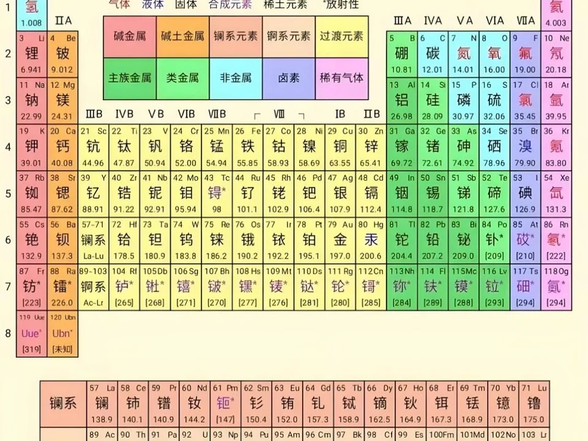
【游戏环节】
还剩下几个元素没有回家，剩下几个房子需要你帮他们找到自己的家。
结合刚才的知识，把剩下的元素送回家。
完成任务后，你告别了门捷列夫，搭乘飞毯由小人国转向大人国。在这里你服下巨人国的药水，变成巨人，俯视整个宇宙，各个行星仿佛放在手中的水晶球，你通过定位的方式（互动）用手指放大选中的星球。
【此处介绍八大星系的知识：八大行星（8 Planets），是指太阳系的八个大行星，按照离太阳的距离从近到远，它们依次为水星（☿）、金星（♀）、地球（⊕）、火星（♂）、木星（♃）、土星（♄）、天王星（♅）、海王星（♆ [1]）。八大行星自转方向多数也和公转方向一致。】
【引入假如剧场：假如将八大星系拿走其中一个会导致什么结果？假如太阳不存在，八大星系会怎么样？那如果把系外行星都放在太阳系里会发生什么？】
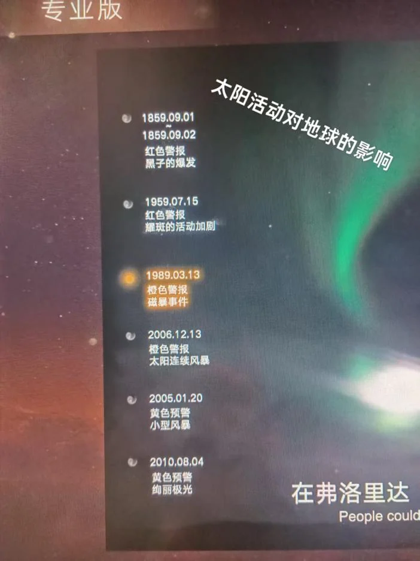
结束体验，最后捧起地球，这颗蓝绿色的宝石般的星球，妈妈的影像出现在宇宙中，母亲的声音传来：“宇宙如此浩瀚，我们如此渺小，此刻，在你的眼中我们难以攀登的珠峰不过是一条冰溜子、长江是给大地的一笔书法、每座城市都是一个乐高秀，孩子，请不要停止探索，继续前进吧！开天辟地以来，在地球上活过的人大约总共一千亿。我们所在的这个字宙，也就是银河系，也有大约一千亿颗星星。因此，每一个在地球上活过的人，在这个宇宙里都有一颗对应的星星，或许有一天，我们将跨越层层距离，再次相见，但在这儿之前，请你不要忘记用足迹去丈量脚下的土地，用攀登来丈量苍穹的距离。”
妈妈的样子化作点点繁星，消散在宇宙中。
【完】
【支线二：丈量——世界的时间】
你滑动推杆，进入时间的世界。
此刻你化身在水运仪象台面前，苏颂正拉着你去参观他的发明。面对眼前运转周密的巨大仪器，苏颂向你介绍：水运仪象台是一座底为正方形、下宽上窄略有收分的木结构建筑，高大约有十二米，底宽大约有七米，共分为三大层。上层是一个露天的平台，设有浑仪一座，用龙柱支持，下面有水槽以定水平。浑仪上面覆盖有遮蔽日晒雨淋的木板屋顶，为了便于观测，屋顶可以随意开闭，构思比较巧妙。露台到仪象台的台基有七米多高。中层是一间没有窗户的“密室”，里面放置浑象。天球的一半隐没在“地平”之下，另一半露在“地平”的上面，靠机轮带动旋转，一昼夜转动一圈，真实地再现了星辰的起落等天象的变化。
下层包括报时装置和全台的动力机构等。设有向南打开的大门，门里装置有五层木阁，木阁后面是机械传动系统。这是一台集天体观测、星象演示与定时报时功能于一体的精密仪器。
在了解好水运仪象台的结构后，你翻开母亲的日记，上面有母亲留下的注解：此刻，你应该已经了解了时间的基本概念，但这并不足够，充满智慧和探索精神的人，开始假设超越时空——
【此处引申爱因斯坦的课堂】
此刻你通过日记来到了一片草地的山坡上，一名少年像小鸟一样俯冲跑下山，周而复始，你走过去，他告诉你，他是16岁的爱因斯坦，他心里有一个困惑，如果他跑得像光一样快，光会不会静止呢？说完后少年飞快跑走，再跑上山他已经变成长大后的爱因斯坦，他兴奋的告诉你他已经找到了答案：跑得越快，惯性就越大，也就越难跑得更快，所以没有人能比光跑得更快。跑得太快了，时间竟然会变慢，空间长度也会缩短，这就是狭义相对论。
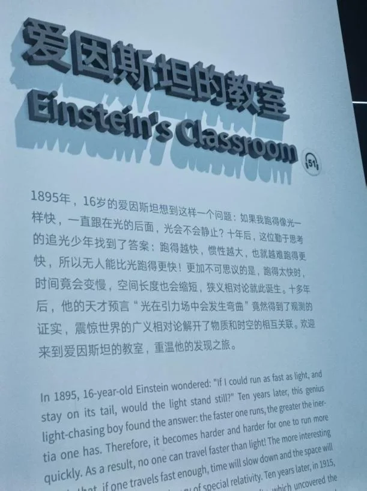
跟随他的脚步，你们登上一辆火车，他指着铁轨向你介绍【火车思想实验】火车思想实验是爱因斯坦为验证狭义相对论设计的理想化实验，核心在于阐释同时性的相对性原理，属于狭义相对论基础概念之一 该实验设定匀速行驶的火车与铁轨两个惯性参照系。当地面观察者判定铁轨两端光源同时发光并抵达中点时，火车中点的观测者因自身运动状态差异，会观察到来自车头方向的光先到达。这一现象揭示了不同参照系下对“同时性”判断的相对性，成为狭义相对论时空观的关键例证。
爱因斯坦在一站下车向你挥手告别，他下车后，火车以飞快的速度跑起来，飞上天空，穿越到星际之间，停车后你下车，发现此刻你正身处宇宙之中，太阳系就在你的眼前。
妈妈的形象出现在星空中：“如你所见，空间和时间彼此交织。行星和恒星也和人类一般，从生到死。人的一生短短数十载，太阳的寿命则是我们的一亿倍。与群星相比，我们就像朝生暮死的蜉蝣。在真正的蜉蝣眼里，人类恐怕也是迟钝缓慢，甚至不怎么动弹的物体。从恒星的角度来看，人类，这种数量多达几十亿，生命转瞬即逝的生物，都挤在一个异常寒冷、坚固，而且遥远的硅酸盐球体上。孩子，或许，我们在这茫茫宇宙，会再次相见”
【完】